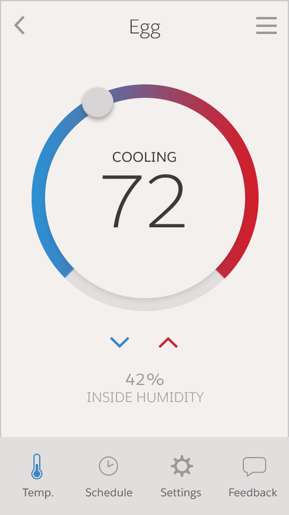

<div class="row monitor-height heroku-connect">
  <div class="col-lg-12 monitor-height">
    <div class="row monitor-height">
      <hotspots-container>
        <wizard name="monitor" on-finish="finishedWizard()">
          <wz-step>
            <div class="step step-0">

            </div>
          </wz-step>
          <wz-step>
            <div class="step step-1">
              <div class="click-box active" ng-click="Next()"></div>
            </div>
          </wz-step>
          <wz-step>
            <div class="step step-2">
              <div class="click-box" ng-class="{active:!button.show}" ng-click="Next()"></div>
            </div>
          </wz-step>
          <wz-step>
            <div class="step step-3" ng-class="{active:button.clicked}">
              <div class="click-box" ng-class="{active:!button.clicked}" ng-click="ToggleClicked()"></div>
              <div class="flyout" ng-class="{active:button.clicked}">
                <span>This is Salesforce’s Object Manager. All the mobile data we just mapped from Heroku gets pushed directly
                  to Salesforce. Now you can show this data inside the app you’ll build for Product Managers on the Salesforce
                  Platform.
                </span>
                <a ng-click="Next()">continue
                  <i></i>
                </a>
              </div>
            </div>
          </wz-step>
          <wz-step>
            <div class="step step-4">
              
              <div class="intro-copy">
                <div class="intro-copy-block">
                  <h2>2-way communication</h2>
                  <p>You will build an app to help Product Managers unlock these insights!</p>
                  <p>Doing this in Salesforce means you can extend the power of the customer data in your CRM and deliver timely
                    innovations based on what your customers want. Using Salesforce Platform makes app-building as easy as
                    dragging and dropping. Give it a try!</p>
                </div>
                <a href="" ng-click="Next()" class="btn btn-intro active">Next</a>
              </div>
            </div>
          </wz-step>
          <wz-step>
            <div class="step step-5">
              <div class="intro-copy">
                <div class="intro-copy-block">
                  <h2>2-way communication</h2>
                  <p>Heroku works in real-time to bring customer data straight to your dashboard. For example, a customer just
                    submitted an idea on her Egg mobile app. Her profile in Salesforce was automatically updated with the
                    new feedback.</p>
                </div>
                <a href="" ng-click="Next()" class="btn btn-intro active">Next</a>
              </div>
            </div>
          </wz-step>


          <wz-step success="true">
            <div class="step success">
              <li-center>
                <p>
                  
                </p>
                <h2>Success!</h2>
                <p>
                  Just like that, with a simple mapping, data from your Heroku app can easily sync with Salesforce. That’s the magic of Heroku
                  Connect!
                </p>
                <p>
                  Now let’s add one more piece of customer insight.
                </p>
                <p>
                  <a ui-sref="einstein-builder" li-autofocus="wizard.stateIndex == 5" class="btn btn-rounded active">Continue</a>
                </p>
              </li-center>
            </div>
          </wz-step>
        </wizard>
      </hotspots-container>
    </div>
  </div>
</div>